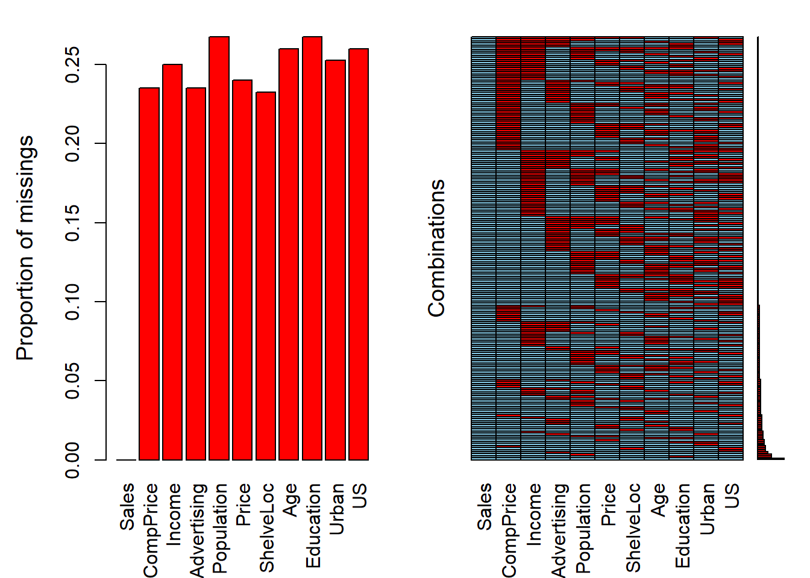

5 Ajuste de modelos
Este capítulo cubre varios temas adicionales relacionados con el ajuste de modelos, como la selección de variables, la comparación de modelos, la validación cruzada y la imputación de datos faltantes. Los conceptos y métodos discutidos aquí se aplican tanto a la regresión lineal como a la logística.
Qué pretendemos aprender en este capítulo:
- Saber cuales son las reglas generales para seleccionar variables en un modelo.
- Aprender a llevar a cabo esta selección con métodos automáticos (stepwise).
- Cómo comparar dos modelos
- Cómo determinar si un modelo tiene sobre-ajuste (overfitting)
- Dar una pequeña idea a qué hacer cuando tenemos datos faltantes (missing data)
5.1 Reglas generales para la selección de variables
¿Cómo sabemos qué variables (independientes) deben incluirse en un modelo? La respuesta sencilla es: a menudo no lo sabemos. Aquí hay algunas reglas generales cuando se piensa en la selección de variables:
Piensa en los datos. ¿Qué variables tiene sentido incluir dada la situación? ¿Alguna literatura publicada ofrece orientación? Si estamos en modo descriptivo, es posible que solo nos interesen determinadas variables y utilicemos las demás como controles. Si estamos en modo predictivo, incluimos todas las variables que, por razones aditivas, podrían ser importantes para predecir el resultado. Sin embargo, esta es una guía muy general, ya que diferentes contextos exigen diferentes enfoques para el ajuste del modelo.
Incluir términos cuadráticos si hay evidencia de gráficos bivariados de una relación no lineal entre predictor y resultado. En general, no incluimos términos polinomiales con grados superiores a 2. Para hacerlo, se corre el riesgo de sobreajuste (término del que hablaremos más tarde).
Buscar posibles interacciones entre variables con los efectos principales más grandes. En general, no incluimos interacciones de orden superior (mayores que 2) a menos que tengamos una razón lógica y podamos explicarla. También hay que tener en cuenta que las interacciones son bastante difíciles de explicar.
Considerar combinar predictores separados en un solo predictor — un “puntaje total” — obtenido al sumarlos o promediarlos.
Simplicidad. Los modelos sencillos son casi siempre mejores — son más interpretables y tienden a tener menor variación (principio de parsimonia).
5.2 Selección paso a paso (stepwise)
La técnica tradicional en estadística para seleccionar variables es selección paso a paso (o stepwise en inglés).
Con selección hacia adelante comenzamos con un modelo nulo (solo contiene el intercept) y agregamos una variable a la vez. Si la variable agregada mejora el modelo, la mantenemos y agregamos otra. Continuamos hasta que se hayan probado todas las variables como podemos ver en la siguiente figura:

Selección hacia adelante
Con selección hacia atrás comenzamos con un modelo completo (todos los términos disponibles) y eliminamos variables en serie (una a una). Si el modelo es mejor después de eliminar una variable, lo dejamos fuera. Continuamos hasta que se hayan probado todas las variables como podemos ver en la siguiente figura:

Selección hacia atrás
Selección hacia adelante seguida de selección hacia atrás (saltos). Consiste en ir realizando en cada paso una selección hacia adelante o hacia atrás en función del mejor paso que podamos hacer.
Desafortunadamente, estos procedimientos de ajuste manual son defectuosos. Dependen del orden en el que se agregan o excluyen las variables y, a menudo, no seleccionarán el mejor modelo. Además, por ejemplo, supongamos que tenemos una base de datos con \(k\) = 13 variables predictoras, lo que significa que hay \(2^k\) o 8192 modelos posibles que podríamos ajustar y eso sin tener encuenta la posible introducción de interacciones o términos polinómicos. Este es un espacio extremadamente grande para buscar el mejor modelo, y la búsqueda es computacionalmente costosa y requiere mucho tiempo. Realizar tal búsqueda manualmente sería prácticamente imposible.
5.3 Comparación de modelos
Ya estamos familiarizados con los términos \(R^2\), RMSE y RSS. Éstos nos servirán como herramientas para comparar modelos. En general, si agregamos una variable y \(R ^2\) sube y RMSE / RSS baja, entonces el modelo con la variable adicional siempre es mejor. La cantidad de variación explicada ha aumentado. Sin embargo, como siempre en estadística debemos preguntarnos ¿es este aumento estadísticamente significativo?. Este hecho también introduce un nuevo problema: el sobreajuste. Sabemos que el, \(R^2\) ajustado penaliza el ajuste teniendo en cuenta el número de predictores y podría ser una solución. También tenemos otra posibilidad para penalizar la complejidad de los modelos usando métodos de criterio de información como el AIC (Akaike Information Criterion).
\[\mathrm {AIC} = - 2 \ln(L) + 2k\]
donde \(k\) es el número de parámetros estimados en el modelo, \(L\) es el valor maximizado de la función de verosimilitud del modelo y \(ln\) es el logaritmo natural. Dado un conjunto de modelos candidatos para los datos, el modelo preferido es el que tiene el valor de AIC más bajo. Al penalizar por \(k\) más grandes (garantizados por el término final, \(+ 2k\)), AIC intenta protegerse contra el sobreajuste. Es posible, entonces, observar \(R^2\) aumentar con la adición de predictores, mientras que AIC baja.
También podemos comparar modelos con una prueba estadística formal utilizando la prueba de razón de verosimilitud (LRT por sus siglas en inglés):
\[
2 \times [\ln(L_{a}) - \ln(L_{c})]
\]
donde \(\ln(L_{c})\) es el logaritmo de la probabilidad del modelo actual (o basal) y \(\ln (L_{a})\) es el logaritmo de la probabilidad del modelo alternativo con predictores adicionales. La función lrtest () en el paquete lmtest implementa el test LRT. La función anova () en R base también comparará modelos usando una prueba F.
Vamos a ilustrar algunos de ejemplos de comparación de modelos usando los datos de Hitters del paquete ISLR que tiene información sobre bateadores de la Major League de USA entre los años 1986 y 1987. Estamos interesados en crear un modelo para predecir el salario de los bateadores (variable Salary). Partimos de un modelo nulo:
## lm(formula = Salary ~ 1, data = Hitters)
## coef.est coef.se
## (Intercept) 535.93 27.82
## ---
## n = 263, k = 1
## residual sd = 451.12, R-Squared = 0.00## [1] 535.93Un modelo nulo consiste solo en una intersección, cuyo coeficiente, como podemos ver, es solo la media de Salario. La pregunta clave es si a medida que hacemos un modelo más complejo esa complejidad está justificada. Es decir, si agregar predictores no solo reduce el sesgo sino que lo hace sin aumentar indebidamente la varianza. Veámos qué ocurre si agreguamos más predictores.
## lm(formula = Salary ~ Hits, data = Hitters)
## coef.est coef.se
## (Intercept) 63.05 64.98
## Hits 4.39 0.56
## ---
## n = 263, k = 2
## residual sd = 406.17, R-Squared = 0.19##
## Model 1: Salary ~ 1
## Model 2: Salary ~ Hits
##
## L.R. Chisq d.f. P
## NA 1 NA## Analysis of Variance Table
##
## Model 1: Salary ~ 1
## Model 2: Salary ~ Hits
## Res.Df RSS Df Sum of Sq F Pr(>F)
## 1 262 53319113
## 2 261 43058621 1 10260491 62.194 8.531e-14 ***
## ---
## Signif. codes: 0 '***' 0.001 '**' 0.01 '*' 0.05 '.' 0.1 ' ' 1## df AIC
## null 2 3964.130
## h1 3 3909.918La variable Hits es estadísticamente significativ, ya que el IC del 95% no incluye 0 (4,39 \(\pm\) 2 x 0,56) (o el p-valor del test de Score es \(<0.05\)). Estos tres métodos coinciden en que el modelo con Hits es una mejora con respecto al modelo nulo. En el caso de lrtest () y anova (), el p-valor representa los resultados de una prueba estadística (prueba chi-cuadrado y prueba F, respectivamente) para determinar si el segundo modelo más complejo es un mejor ajuste a los datos. ¿Agregar un predictor adicional, AtBat, mejora aún más el modelo?
## lm(formula = Salary ~ Hits + AtBat, data = Hitters)
## coef.est coef.se
## (Intercept) 141.27 76.55
## Hits 8.21 2.08
## AtBat -1.22 0.64
## ---
## n = 263, k = 3
## residual sd = 404.13, R-Squared = 0.20##
## Model 1: Salary ~ Hits
## Model 2: Salary ~ Hits + AtBat
##
## L.R. Chisq d.f. P
## NA 1 NA## Analysis of Variance Table
##
## Model 1: Salary ~ Hits
## Model 2: Salary ~ Hits + AtBat
## Res.Df RSS Df Sum of Sq F Pr(>F)
## 1 261 43058621
## 2 260 42463750 1 594871 3.6423 0.05743 .
## ---
## Signif. codes: 0 '***' 0.001 '**' 0.01 '*' 0.05 '.' 0.1 ' ' 1## df AIC
## h1 3 3909.918
## h2 4 3908.260Los resultados son ambiguos. El \(R^2\) aumenta, mientras que AIC, el logaritmo de la probabilidad y el RSS disminuyen, pero la disminución en los dos últimos casos no es estadísticamente significativa. (Este resultado es consistente con el hecho de que AtBat no es en sí mismo estadísticamente significativo, ya que el IC del 95% para AtBat incluye 0: -1.22 \(\pm\) 2 x .64). ¿Deberíamos dejar AtBat en el modelo? No mejora mucho el ajuste, si es que lo hace, al tiempo que agrega complejidad. Entonces, deberíamos sacarlo. Desafortunadamente, estas opciones a menudo no son claras, razón por la cual el ajuste de modelos a veces parece más un arte que una ciencia.
Para implementar el método de selección, seguiríamos agregando variables y comparando modelos usando lrtest () o anova () con el fin de encontrar el mejor ajuste posible. Sin embargo, un problema con este procedimiento es que el orden en el que recorremos los predictores afectará nuestras decisiones de selección porque el impacto de cada predictor en el ajuste del modelo depende de la presencia de los demás. Por ejemplo, supongamos que agregamos AtBat más adelante en el proceso de selección:
h3 <- lm(Salary ~ Hits + Years + HmRun + RBI + Walks + Assists, data = Hitters)
h4 <- lm(Salary ~ Hits + Years + HmRun + RBI + Walks + Assists + AtBat, data = Hitters)
lrtest(h3, h4)##
## Model 1: Salary ~ Hits + Years + HmRun + RBI + Walks + Assists
## Model 2: Salary ~ Hits + Years + HmRun + RBI + Walks + Assists + AtBat
##
## L.R. Chisq d.f. P
## NA 1 NA## df AIC
## h3 8 3849.311
## h4 9 3840.198Ahora AtBat mejora claramente el ajuste, pero nunca lo hubiéramos descubierto si ya lo hubiéramos descartado. Esto es preocupante. ¿Existe una forma mejor de seleccionar variables? Quizás, veámoslo.
5.4 Métodos de selección automática
Se han desarrollado algoritmos para buscar en el espacio de modelos de manera eficiente el modelo óptimo. Sin embargo, desde el principio conviene tener cuidado con la selección automática de variables. La elección de variables no debe ser un proceso mecánico. Debemos, en cambio, buscar comprender el proceso de generación de datos. De hecho, el mayor beneficio de la selección manual por pasos consiste menos en producir un buen modelo que en la comprensión obtenida al ajustar muchos modelos y ver, mediante prueba y error, qué predictores son más reactivos con el resultado. Especialmente cuando se trata de descripción, los algoritmos de selección automática de variables son solo herramientas para explorar sus datos y pensar en modelos.
La función step () en R base automatiza la selección de variables paso a paso usando AIC.
## lm(formula = Salary ~ AtBat + Hits + HmRun + Runs + RBI + Walks +
## Years + CAtBat + CHits + CHmRun + CRuns + CRBI + CWalks +
## League + Division + PutOuts + Assists + Errors + NewLeague,
## data = Hitters)
## coef.est coef.se
## (Intercept) 163.10 90.78
## AtBat -1.98 0.63
## Hits 7.50 2.38
## HmRun 4.33 6.20
## Runs -2.38 2.98
## RBI -1.04 2.60
## Walks 6.23 1.83
## Years -3.49 12.41
## CAtBat -0.17 0.14
## CHits 0.13 0.67
## CHmRun -0.17 1.62
## CRuns 1.45 0.75
## CRBI 0.81 0.69
## CWalks -0.81 0.33
## LeagueN 62.60 79.26
## DivisionW -116.85 40.37
## PutOuts 0.28 0.08
## Assists 0.37 0.22
## Errors -3.36 4.39
## NewLeagueN -24.76 79.00
## ---
## n = 263, k = 20
## residual sd = 315.58, R-Squared = 0.55La selección hacia adelante se estableció en 19 predictores con un \(R^2\) de .55.
## lm(formula = Salary ~ AtBat + Hits + Walks + CAtBat + CRuns +
## CRBI + CWalks + Division + PutOuts + Assists, data = Hitters)
## coef.est coef.se
## (Intercept) 162.54 66.91
## AtBat -2.17 0.54
## Hits 6.92 1.65
## Walks 5.77 1.58
## CAtBat -0.13 0.06
## CRuns 1.41 0.39
## CRBI 0.77 0.21
## CWalks -0.83 0.26
## DivisionW -112.38 39.21
## PutOuts 0.30 0.07
## Assists 0.28 0.16
## ---
## n = 263, k = 11
## residual sd = 311.81, R-Squared = 0.54La selección hacia detrás se estableció en 10 predictores con un \(R^2\) de .54. Con muchas menos variables, somos capaces de explicar prácticamente la misma variabilidad.
La función regsubsets () en el paquete leaps realiza una búsqueda exhaustiva del espacio modelo utilizando el algoritmo de saltos (adelante y atrás) para la selección de variables.

El gráfico presenta diferentes modelos que pueden ser buenos candidatos organizados según el BIC (\(\mathrm{BIC} = {\ln(n) k - 2 \ ln ({L})}\), donde \(L\) es el valor de máxima verosimilitud, \(n\) es el número de observaciones, \(k\) es el número de parámetros y \(ln\) es el logaritmo natural). Como el AIC, el BIC penaliza por la complejidad del modelo. Un BIC más bajo es mejor. El modelo con el BIC más bajo es el bastante simple en la parte superior de la figura: intercept, AtBat, Hits, Walks, CRBI, DivisionW y PutOuts. Si reajustamos un modelo con estos predictores usando lm () encontramos que tiene un \(R^2\) de .51, que tampoco está muy lejos del valor obtenido con un método hacia adelante y con muchísimas menos variables (principio de parsimonia). Notemos que, además, todos los coefecientes de este modelo (a excepción del intercept, pero que es necesario introducir) son estadísticamente significativos según el test de score:
##
## Call:
## lm(formula = Salary ~ AtBat + Hits + Walks + CRBI + Division +
## PutOuts, data = Hitters)
##
## Residuals:
## Min 1Q Median 3Q Max
## -873.11 -181.72 -25.91 141.77 2040.47
##
## Coefficients:
## Estimate Std. Error t value Pr(>|t|)
## (Intercept) 91.51180 65.00006 1.408 0.160382
## AtBat -1.86859 0.52742 -3.543 0.000470 ***
## Hits 7.60440 1.66254 4.574 7.46e-06 ***
## Walks 3.69765 1.21036 3.055 0.002488 **
## CRBI 0.64302 0.06443 9.979 < 2e-16 ***
## DivisionW -122.95153 39.82029 -3.088 0.002239 **
## PutOuts 0.26431 0.07477 3.535 0.000484 ***
## ---
## Signif. codes: 0 '***' 0.001 '**' 0.01 '*' 0.05 '.' 0.1 ' ' 1
##
## Residual standard error: 319.9 on 256 degrees of freedom
## (59 observations deleted due to missingness)
## Multiple R-squared: 0.5087, Adjusted R-squared: 0.4972
## F-statistic: 44.18 on 6 and 256 DF, p-value: < 2.2e-16**IMPORTANTE:** ¿Es este modelo realmente mejor? El algoritmo hizo una búsqueda exhaustiva del espacio de modelos y, sin embargo, arrojó un modelo con $R^2$ un poco más bajo. ¿Cómo podría ser mejor? (probablemente lo sea). Si bien el sesgo en este modelo será mayor que en el modelo más grande seleccionado por la función `step ()`, la varianza probablemente sea menor. Recuerde: el sesgo se refiere al rendimiento del modelo dentro de la muestra y la varianza se refiere al rendimiento del modelo fuera de la muestra: cómo se comporta el modelo cuando encuentra nuevos datos. Si el modelo tiene un rendimiento deficiente en datos nuevos, con una gran discrepancia entre el rendimiento dentro y fuera de la muestra, entonces está sobreajustado. AIC, BIC y $R^2$ ajustado penalizan por la complejidad del modelo para evitar el sobreajuste y tenderán a seleccionar modelos con mayor sesgo y menor varianza.5.5 Validación cruzada
La validación cruzada (CV por sus siglas en inglés) es la técnica que usamos para evaluar si un modelo está sobreajustado y para estimar cómo funcionará con nuevos datos.
El sobreajuste es un peligro importante en el análisis predictivo, especialmente cuando se utilizan algoritmos de aprendizaje automático que, sin el ajuste adecuado, puede aprender datos de nuestra muestra casi a la perfección, esencialmente ajustando el ruido (o variabilidad). Cuando se utiliza un modelo de este tipo para predecir nuevos datos, con un ruido (o variabilidad) diferente, el rendimiento del modelo puede ser sorprendentemente malo. Usamos CV para ayudarnos a identificar y evitar tales situaciones. ¿Cómo podemos hacer esto? Muchos algoritmos de aprendizaje automático requieren que el usuario especifique ciertos parámetros (hiper-parámetros). Veremos más adelante que, por ejemplo, necesitaremos especificar un valor para \(m\) que corresponde al número de predictores elegidos al azar que se utilizarán en cada división de árbol cuando usemos “random forest” como algoritmo de aprendizaje. Cuanto menor sea \(m\), más simple será el árbol. Podemos usar CV para elegir el valor de \(m\) que minimiza la variación y reduce el sobreajuste. La regresión lineal no tiene parámetros que debe especificar el usuario, pero la CV aún nos ayuda a evaluar cuánto podría sobreajustarse un modelo a los datos de muestra.
De manera breve, los algoritmos de cross-validation se pueden resumir como:
- Reserva una parte pequeña de los datos
- Crea (o entrena) el modelo usando el resto de datos
- Testa el modelo en los datos reservados.
A continuación se describen algunas de las distintas técnicas de validación cruzada que existen.
5.5.1 Validación en un conjunto de datos externo
La versión más simple de CV es el llamado método de conjunto de validación, que consta de los siguientes pasos:
- Dividir los datos de la muestra en dos partes: un conjunto de entrenamiento y otro de validacións. Los investigadores usan diferentes proporciones, pero es común seleccionar al azar el 70% de los datos como conjunto de entrenamiento y el 30% como conjunto de prueba o validación. . (Obviamente, debemos tener suficientes datos en la muestra para ajustar un modelo después de dividir los datos). Debido a que CV se basa en un muestreo aleatorio, nuestros resultados variarán a menos que usemos
set.seed (). Demostraremos usando los datos de Hitters, usando solo casos completos (esto es importante, no tener missings - veremos más adelante alguna forma de solucionar este problema).
set.seed(123)
Hitters_complete <- Hitters[complete.cases(Hitters), ]
rows <- sample(nrow(Hitters_complete), .7 * nrow(Hitters_complete))
train <- Hitters_complete[rows, ]
test <- Hitters_complete[-rows, ]- Ajustar un modelo en el conjunto de entrenamiento usando un procedimiento de selección de variables apropiado. Crearemos dos modelos para comparar: uno con todas las variables, luego otro con solo las variables elegidas por
regsubsets ().
full_model <- lm(Salary ~., data = train)
select_model <- lm(Salary ~ AtBat + Hits + Walks + CRBI + Division + PutOuts, data = train)- Utilizar ese modelo para predecir en el conjunto de prueba. El rendimiento en el conjunto de prueba es la estimación de CV para el rendimiento fuera de la muestra del modelo.
results <- data.frame(Model = c("Modelo completo muestra entrenamiento",
"Modelo seleccionado muestra entrenamiento",
"Modelo completo muestra validación",
"Modelo seleccionado muestra validación"),
RMSE = round(c(rmse(fitted(full_model), train$Salary),
rmse(fitted(select_model), train$Salary),
rmse(predict(full_model, newdata = test), test$Salary),
rmse(predict(select_model, newdata = test), test$Salary)),1))
results## Model RMSE
## 1 Modelo completo muestra entrenamiento 297.8
## 2 Modelo seleccionado muestra entrenamiento 326.1
## 3 Modelo completo muestra validación 368.2
## 4 Modelo seleccionado muestra validación 306.4Podemos ver que el modelo completo está sobreajustado — el RMSE dentro de la muestra es mejor que el RMSE fuera de muestra — mientras que el modelo seleccionado elegido por regsubsets () usando BIC no está sobreajustado. De hecho, el modelo seleccionado funciona mucho mejor fuera de la muestra que dentro de la muestra, aunque este resultado en particular es probablemente una cuestión de azar, una función de división aleatoria que estamos usando. Sin embargo, en general, estos resultados ilustran el peligro de la complejidad del modelo y por qué tiene sentido elegir predictores utilizando medidas de ajuste del modelo que penalicen la complejidad. Los modelos simples tienden a generalizar mejor. Esta figura muestra estas relaciones:

Sobreajuste
5.5.2 Leave-one-out cross validation (LOOCV)
Este método funciona de la siguiente manera:
- Extrae una observación de los datos y usa el resto para entrenar el modelo
- Testa el modelo con la observación que ha sido extraída en el paso anterior y guarda el error asociado a esa predicción
- Repite el proceso para todos los puntos
- Calcula el error de predicción global usando el promedio de todos los errores estimados en el paso 2.
Veremos más adelante cómo hacer estos cálculos con una libería específica. De momento, para que aprendáis cómo funciona esta metodología, debéis realizar el siguiente ejercicio
| EJERCICIO (Entrega en Moodle: P2-LOOCV): |
| Crea una función R que lleve a cabo el procedimiento de LOOCV y estima el valor de LOOCV para el modelo completo y el modelo seleccionado del ejemplo anterior. |
5.5.3 K-fold cross validation (K-fold CV)
La diferencia con LOOCV es que este método evalúa el comportamiento del modelo en un conjunto de datos de distingo tamaño (K). El algoritmo es el siguiente:
- Separa los datos en k-subconjuntos (k-fold) de forma aleatoria
- Guarda uno de los subconjuntos de datos y entrena el modelo con el resto de individuos
- Testa el modelo con los datos resevados y guarda el error de predicción promedio.
- Repite el proceso hasta que los k subconjuntos hayan servido de muestra test.
- Calcula el promedio de los k errores que han sido guardados. Este valor es el error de cross-validación y nos sirve para evaluar el comportamiento de nuestro modelo como si lo usáramos en una base de datos externa.
La principal ventaja de este método respecto a LOOCV es el coste computacional. Otra ventaja que no es tan obvia, es que este método a menudo da mejores estimaciones del error del modelo que LOOCV5.
Una pregunta típica es cómo se escoje el valor óptimo de K. Valores pequeños de K da estimaciones sesgadas. Por otro lado, valores grandes de K están menos sesgados, pero tienen mucha variabilidad. En la práctica, normalmente se usan valores de k = 5 or k = 10, ya que estos valores se han mostrado de forma empírica como los que tienen tasas de error estimadas no demasiado sesgadas ni con mucha varianza.
Al igual que en el caso anterior veremos unas liberías adecuadas para hacer estos análisis de forma eficiente. De momento realiza el siguiente ejercicio:
| EJERCICIO (Entrega en Moodle: P2-Kfold): |
| Crea una función R que lleve a cabo el procedimiento de K-fold CV y estima el valor de K-fold CV para el modelo completo y el modelo seleccionado del ejemplo anterior. Haz que la función tenga un parámetro que dependa de K, y da los resultados para K=5 y K=10. |
5.5.4 Uso de CV para estimar el hiper-parámetro
Si el algoritmo de aprendizaje automático que vamos a utilizar para realizar predicciones tiene un parámetro que controla el comportamiento (por ejemplo grado de polinomio en regresión no lineal, o el número de nodos en árboles de clasificación) éste podría elegirse de forma que minimizara el error de clasificación. Esta selección también puede dar problemas de sobre ajuste ya que podríamos seleccionar de forma que ajustara perféctamente a nuestros datos.
Para evitar el problema, se puede utilizar cualquiera de las técnicas vistas con anterioridad. Aquí tenemos un ejemplo donde se ha usado un modelo de aprendizaje que se basa en introducir términos polinómicos de varaibles para realizar una mejor predicción mediante regresión lineal usando sólo términos lineales.

Sobreajuste según un hiper-parámetro
5.5.5 Uso de bootstrap
Si en vez de partir nuestra muestra en \(K\) submuestras, realizamos una selección aleatoria de muestras con reemplazamiento, nos encontraremos ante una aproximación de tipo bootstrap que es una técnica muy usada en estadística para hacer inferencia cuando la distribución del estadístico es desconocida basada en el remuestreo [aquí tenéis una descripción sencilla de esta metodología].

Boostrap

Boostrap
De manera que el procedimiento bootstrap aplicado a regresión sería:
- Sacar una muestra aleatoria con remplazamiento de tamaño \(n\) de nuestros datos (tenemos \(n\) observaciones)
- Guardar las muestras que no han sido seleccionadas (datos de prueba)
- Entrena el modelo con la muestra bootstrap
- Testa el modelo con los datos de prueba y guarda el error de predicción promedio.
- Repite el proceso \(B\) veces
- Calcula el promedio de los \(B\) errores que han sido guardados. Este valor es el error bootstrap y nos sirve para evaluar el comportamiento de nuestro modelo.
| EJERCICIO (Entrega en Moodle: P2-bootstrap): |
| Crea una función R que lleve a cabo el procedimiento boostrap y estima el valor de este método para el modelo completo y el modelo seleccionado del ejemplo anterior. Haz que la función tenga un parámetro que dependa de \(B\), y da los resultados para B=25, B=50 y B=100. Comenta brevemente los resultados |
5.6 Imputación de datos faltantes
La mayoría de métodos para aprendizaje automático requiren casos completos. Sin embargo, los datos reales a menudo tienen observaciones faltantes. La función lm (), analiza casos completos sin indicar nada al usuario, pero … ¿Deberíamos eliminar estas filas o imputar las observaciones que faltan? Casi siempre es mejor imputar, aunque, en la práctica puede que no valga la pena imputar algunas observaciones faltantes, ya que eliminarlas no suele cambiar el ajuste en absoluto. La imputación de datos faltantes es un tema extenso y complicado; aquí haremos una breve introducción y discutiremos los principales temas a tener en cuenta.
Tipos de valores perdidos:
Falta completamente al azar (MCAR por sus siglas en inglés): la probabilidad de que falte una observación es la misma para todos los casos. Eliminar los casos que faltan en esta instancia no causará sesgos, aunque es posible que perdamos información.
Missing at random (MAR pos sus siglas en inglés): la probabilidad de que falte una observación depende de un mecanismo conocido. Por ejemplo, es menos probable que algunos grupos respondan encuestas. Si conocemos la pertenencia a un grupo, podemos eliminar las observaciones faltantes siempre que incluyamos el grupo como factor en una regresión. Sin embargo, generalmente podemos hacer algo mejor que simplemente eliminar estos casos.
Missing not at random (MNAR por sus siglas en inglés) : la probabilidad de que falte una observación depende de algún mecanismo desconocido — una variable no observada. Tratar los problemas del MNAR es difícil o incluso imposible.
Nos centraremos en los problemas MAR. Una solución simple es completar o imputar los valores MAR. Hay dos estrategias principales:
Imputación simple reemplaza los valores perdidos según una estadística univariante o un modelo de regresión multivariable. Existen muchas librerías que implementan diferentes métodos (en este curso veremos algunas). En la imputación con medianas imputamos los datos faltantes usando la mediana de la variable que presenta datos faltantes (La mediana es mejor que la media cuando los datos de la columna están sesgados). Podemos imputar también usando KNN o random forest creando un modelo multivariante de las observaciones faltantes usando otras variables y usar ese modelo para predecir los valores faltantes.
El problema con la imputación simple, teóricamente, es que la variabilidad de la variable imputada es menor de lo que habría sido la variabilidad en la variable real, creando un sesgo hacia 0 en los coeficientes. Por tanto, mientras que la eliminación pierde información, la imputación única puede provocar sesgos. (Sin embargo, no me queda claro cuán grande es este problema en la práctica).
La imputación múltiple aborda estos problemas imputando los valores faltantes con un modelo multivariante, pero agregando la variabilidad de nuevo al volver a incluir la variación del error que normalmente veríamos en los datos. El término “múltiple” en la imputación múltiple se refiere a los múltiples conjuntos de datos creados en el proceso de estimación de los coeficientes de regresión. Los pasos son los siguientes:
Crear \(m\) conjuntos de datos completos con valores perdidos imputados. Las imputaciones se realizan extrayendo aleatoriamente distribuciones de valores plausibles para cada vector de columna (variables).
Ajustar un modelo lineal en cada conjunto de datos imputados y almacene \(\hat \beta\)s y SE.
Promediar los \(\hat \beta\)s y combinar los SE para producir coeficientes basados en múltiples conjuntos de datos imputados. Específicamente,
\[\hat \beta_ {j} = \frac {1} {m} \sum_ {i} \hat \beta_ {ij}\] y
\[s ^ 2_j = \frac {1} {m} \sum_{i} s^2_{ij} + var \hat \beta_ {ij} (1 + 1 / m),\]
donde \(\hat \beta_{ij}\) y \(s_{ij}\) son las estimaciones y los errores estándar del resultado imputado \(i^{th}\) para \(i=1, ..., m\) y para el parámetro \(j^{th}\).
La imputación múltiple funciona mejor para la descripción que para la predicción, y probablemente sea preferible a la imputación única si sólo queremos estimar coeficientes. Para la predicción (como es el caso del aprendizaje automático), normalmente bastará con utilizar imputación simple.
Demostraremos métodos de imputación utilizando los datos de Carseats del paquete ISLR. Este es un conjunto de datos simulado de ventas de asientos de coche, del cual eliminaremos aleatoriamente el 25% de las observaciones usando la función prodNA () en el paquete missForest (teniendo cuidado de dejar la variable de resultado, Sales, intacta).
library(missForest)
data(Carseats)
levels(Carseats$ShelveLoc) <- c("Bad","Medium","Good") # Reordenamos los niveles de la variable
set.seed(123)
carseats_missx <- prodNA(Carseats[,-1], noNA=.25)
carseats_miss <- cbind(Sales=Carseats[, 1], carseats_missx)
glimpse(carseats_miss)## Rows: 400
## Columns: 11
## $ Sales <dbl> 9.50, 11.22, 10.06, 7.40, 4.15, 10.81, 6.63, 11.85, 6.54, 4.69, 9.01, 11.96, 3.98, 10.96, 11.17, 8.7...
## $ CompPrice <dbl> 138, 111, 113, 117, 141, 124, 115, NA, NA, NA, 121, 117, NA, 115, 107, NA, 118, NA, 110, 129, 125, 1...
## $ Income <dbl> 73, 48, 35, 100, 64, 113, NA, 81, 110, 113, 78, 94, NA, 28, 117, 95, 32, 74, 110, 76, NA, NA, 46, NA...
## $ Advertising <dbl> 11, 16, NA, 4, 3, 13, NA, 15, 0, 0, 9, 4, 2, NA, 11, 5, NA, 13, 0, 16, 2, 12, 6, 0, 16, 0, 11, 0, NA...
## $ Population <dbl> 276, 260, 269, NA, 340, 501, 45, 425, 108, 131, 150, 503, NA, 29, 148, 400, 284, 251, 408, 58, 367, ...
## $ Price <dbl> 120, NA, NA, 97, 128, 72, 108, 120, NA, 124, 100, NA, NA, NA, 118, 144, 110, 131, 68, 121, NA, 109, ...
## $ ShelveLoc <fct> Bad, NA, Good, NA, Bad, Bad, Good, NA, Good, Good, Bad, Medium, NA, Medium, Medium, Good, Medium, Me...
## $ Age <dbl> 42, 65, NA, 55, 38, NA, 71, 67, 76, 76, 26, 50, NA, 53, 52, 76, 63, 52, 46, 69, NA, NA, NA, 79, 42, ...
## $ Education <dbl> NA, 10, 12, NA, 13, 16, 15, 10, 10, 17, 10, 13, NA, NA, NA, 18, 13, 10, 17, 12, 18, NA, NA, NA, 12, ...
## $ Urban <fct> NA, Yes, Yes, Yes, Yes, NA, NA, Yes, No, NA, NA, Yes, Yes, Yes, Yes, No, Yes, Yes, No, NA, Yes, No, ...
## $ US <fct> Yes, Yes, Yes, Yes, No, Yes, No, Yes, NA, Yes, Yes, Yes, No, Yes, Yes, No, No, NA, Yes, Yes, NA, Yes...Ahora faltan muchas observaciones. Cuando ajustamos un modelo de regresión para la variable Sales observamos que lm () analiza casos completos y se estima un modelo basado en un subconjunto muy pequeño de datos.
## lm(formula = Sales ~ CompPrice + Income + Advertising + Population +
## Price, data = carseats_miss)
## coef.est coef.se
## (Intercept) 6.24 1.99
## CompPrice 0.10 0.02
## Income 0.01 0.01
## Advertising 0.13 0.03
## Population 0.00 0.00
## Price -0.11 0.01
## ---
## n = 93, k = 6
## residual sd = 2.06, R-Squared = 0.59Sólo tenemos 93 observaciones de las 400 originales! Demostraremos la imputación múltiple usando la función mice () de la librería mice.
## [1] "Sales" "CompPrice" "Income" "Advertising" "Population" "Price" "ShelveLoc" "Age"
## [9] "Education" "Urban" "US"El objeto carseats_imp incluye (entre muchas otras cosas) \(m\) conjuntos de datos imputados (la configuración predeterminada es \(m\) = 5). Los conjuntos de datos imputados difieren porque las imputaciones se extraen aleatoriamente de distribuciones de valores plausibles. Podemos visualizar la variabilidad de los predictores en estos conjuntos de datos imputados usando la función densityplot ().

Las líneas azules continuas representan la distribución real de los predictores, mientras que las líneas rojas muestran las distribuciones imputadas. El siguiente paso es usar estos conjuntos de datos imputados para promediar los \(\beta\)s y los SE utilizando la función pool () de la librería mice.
carseats_model_imp <- with(data = carseats_imp,
exp = lm(Sales ~ CompPrice + Income + Advertising + Population + Price))
mi <- summary(pool(carseats_model_imp))Estos coeficientes son similares a los del modelo anterior ajustado utilizando los datos no imputados, pero deberían estar más cerca de los valores de la población porque, en lugar de simplemente eliminar los casos incompletos, utiliza información de distribución para hacer suposiciones fundamentadas sobre los datos faltantes. La imputación múltiple funciona mejor para fines de descripción — estimar coeficientes para informar en un artículo académico, por ejemplo — pero usarla para predecir nuevos datos es incómodo o imposible, por las siguientes razones:
- Si los nuevos datos están completos, podemos utilizar las estimaciones de coeficientes derivadas de la imputación múltiple en una ecuación de regresión para la predicción. Pero esto es difícil ya que hay que hacerlo manualmente. Usamos los datos originales de Carseats como ilustración.
preds <- mi[1, 2] +
mi[2, 2]*Carseats$CompPrice +
mi[3, 2]*Carseats$Income +
mi[4, 2]*Carseats$Advertising +
mi[5, 2]*Carseats$Population +
mi[6, 2]*Carseats$Price
head(preds)## [1] 8.989509 10.150578 9.645498 8.405464 7.306136 12.735945- Si los nuevos datos no están completos, entonces estos coeficientes imputados son inútiles para predecir en filas con observaciones faltantes. Esto, por ejemplo, es el resultado de intentar predecir utilizando los datos con observaciones faltantes.
preds <- mi[1, 2] +
mi[2, 2]*carseats_miss$CompPrice +
mi[3, 2]*carseats_miss$Income +
mi[4, 2]*carseats_miss$Advertising +
mi[5, 2]*carseats_miss$Population +
mi[6, 2]*carseats_miss$Price
head(preds)## [1] 8.989509 NA NA NA 7.306136 12.735945La imputación múltiple, por lo tanto, no resuelve el principal problema al que nos enfrentamos a menudo con los datos faltantes, que es que, aunque hayamos ajustado con éxito un modelo en nuestros datos, el conjunto de validación también puede tener observaciones faltantes, y nuestras predicciones utilizando esos datos puede no poder realizarse.
Podríamos usar uno de los conjuntos de datos imputados, pero entonces ya no estamos haciendo imputación múltiple sino imputación simple. En ese momento, los métodos disponibles en el paquete
miceya no ofrecen ninguna ventaja especial sobre los de los paquetescaretymissForest. De hecho, podrían ser peores ya que la funciónmice ()no fue diseñado para producir la mejor imputación individual, sino más bien una gama de imputaciones plausibles.
Usando caret, podemos hacer una imputación simple usando knnImpute, medianImpute o bagImpute. Estos métodos solo funcionan para variables numéricas, por lo que crearemos una función personalizada para convertir los factores — Shelveloc, Urban y US — en números enteros. (Al usar el conjunto de datos imputados para la regresión, podríamos dejar estas variables como números enteros, siempre que los valores enteros correspondan a los niveles de los factores).
make_df_numeric <- function(df){
data.frame(sapply(df, function(x) as.numeric(x)))
}
carseats_miss_num <- make_df_numeric(carseats_miss)
med_imp <- predict(preProcess(carseats_miss_num, method = c("medianImpute")), carseats_miss_num)
knn_imp <- predict(preProcess(carseats_miss_num, method = c("knnImpute")), carseats_miss_num)
bag_imp <- predict(preProcess(carseats_miss_num, method = c("bagImpute")), carseats_miss_num)El paquete missForest ofrece otra solución de imputación única, que es más simple que las funciones de caret porque maneja datos categóricos automáticamente. Si bien missForest funciona bien para conjuntos de datos pequeños y proporciona imputaciones de buena calidad, es muy lento en conjuntos de datos grandes. De hecho, lo mismo ocurrirá con la función bagImpute () de caret. En tales casos, podría tener sentido usar la función medianImpute () de caret en su lugar que es muy rápida.
## missForest iteration 1 in progress...done!
## missForest iteration 2 in progress...done!
## missForest iteration 3 in progress...done!
## missForest iteration 4 in progress...done!
## missForest iteration 5 in progress...done!Comparemos los errores asociados con estos diferentes métodos de imputación. Podemos hacer esto porque, habiendo creado las observaciones faltantes en primer lugar, podemos comparar las observaciones imputadas con las observaciones verdaderas calculando la suma de los cuadrados de la diferencia. Para las imputaciones usando mice () calculamos los errores para cada uno de los 5 conjuntos de datos imputados. Los resultados de knnImpute () no son comparables porque la función automáticamente centra y escala las variables y los hemos omitido.
comparison <- data.frame(Method = c("mice 1",
"mice 2",
"mice 3",
"mice 4",
"mice 5",
"medianImpute",
"bagImpute",
"missForest"),
RSS = c(rss(make_df_numeric(complete(carseats_imp, 1)), make_df_numeric(Carseats)),
rss(make_df_numeric(complete(carseats_imp, 2)), make_df_numeric(Carseats)),
rss(make_df_numeric(complete(carseats_imp, 3)), make_df_numeric(Carseats)),
rss(make_df_numeric(complete(carseats_imp, 4)), make_df_numeric(Carseats)),
rss(make_df_numeric(complete(carseats_imp, 5)), make_df_numeric(Carseats)),
rss(med_imp, make_df_numeric(Carseats)),
rss(bag_imp, make_df_numeric(Carseats)),
rss(make_df_numeric(mf_imp$ximp), make_df_numeric(Carseats))))
comparison %>%
mutate(RSS = round(RSS)) %>%
arrange(RSS)## Method RSS
## 1 missForest 2489418
## 2 medianImpute 2538059
## 3 bagImpute 2714857
## 4 mice 4 3752513
## 5 mice 5 4389532
## 6 mice 2 4399586
## 7 mice 1 4564721
## 8 mice 3 4791521missforest obtiene los mejores resultados, aunque medianImpute compara muy bien. Los resultados de mice no son muy buenos, probablemente por las razones mencionadas anteriormente: está diseñado para una imputación múltiple, no simple.
James et al. 2014↩︎